Разработка алгоритма, составление, отладка и выполнение программы обработки одномерного массива
Выполнить задания (см. ниже). Файлы с выполненными заданиями сохранять в личной папке в каталоге pr11. В именах файлов проектов включить номер ПР.
Оформить в MS Word отчет о работе, включающий:
- тему работы
- цель работы
- задание 1
- условие задания 1
- блок-схему алгоритма задания 1
- листинг программы задания 1
- результат выполнения программы задания 1
- контрольные вопросы и ответы на них
- выводы по работе
Отчет распечатать и представить при защите ПР.
Задания
Задание 1. Изобразить блок-схему алгоритма и составить программу ввода и обработки одномерного массива.Ввести одномерный массив
D из семи элементов и число b. Для каждого элемента массива вычислить 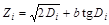. Вывести полученный массив. Найти сумму элементов массива Z с нечетными индексами. Подсчитать количество отрицательных элементов Z.
B из восьми элементов и число x. Для каждого элемента массива вычислить 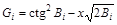. Вывести полученный массив. Найти сумму элементов массива G с четными индексами. Подсчитать количество положительных элементов G.
C из десяти положительных элементов и число a. Для каждого элемента массива вычислить 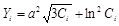. Вывести полученный массив. Найти максимальный элемент Y. Подсчитать количество элементов Y, больших числа 5.
M из девяти элементов и число w. Для каждого элемента массива вычислить 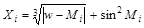. Вывести полученный массив. Найти минимальный элемент X. Подсчитать количество элементов X, значение которых больше двух.
D из двенадцати элементов и число t. Для каждого элемента массива вычислить 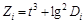. Вывести полученный массив. Найти среднее арифметическое положительных элементов массива Z и заменить третий элемент этого массива полученным значением.
D из пятнадцати элементов и число b. Для каждого элемента массива вычислить 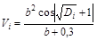. Вывести полученный массив. Заменить значение первого элемента массива V значением минимального элемента этого массива и подсчитать итоговое количество значений, равных минимальному, в массиве V.
F из одиннадцати элементов и число m. Для каждого элемента массива вычислить 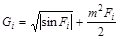. Вывести полученный массив. Найти среднее арифметическое элементов массива G, больших числа четыре. Определить количество таких элементов.
F из десяти элементов и число k. Для каждого элемента массива вычислить 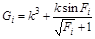. Вывести полученный массив. Найти сумму отрицательных элементов массива G. Заменить модулем полученного значения элементы с четными индексами.
H из тринадцати элементов и число a. Для каждого элемента массива вычислить 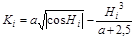. Вывести полученный массив. Найти максимальный отрицательный элемент массива K и заменить второй элемент массива K найденным значением.
D из десяти элементов и число b. Для каждого элемента массива вычислить 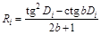. Вывести полученный массив. Поменять местами минимальный и максимальный элементы R и вычислить сумму элементов R, стоящих на четных местах.
U из десяти элементов и число n. Для каждого элемента массива вычислить  . Вывести полученный массив. Определить произведение отрицательных элементов массива D. Поменять местами значения последнего и минимального элементов D.
G из четырнадцати элементов и число h. Для каждого элемента массива вычислить 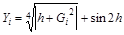. Вывести полученный массив. Найти среднее арифметическое элементов Y, значения которых по модулю не превосходят числа 2. Определить среди них минимальный элемент.
. Вывести полученный массив. Определить произведение отрицательных элементов массива D. Поменять местами значения последнего и минимального элементов D.
G из четырнадцати элементов и число h. Для каждого элемента массива вычислить 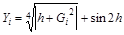. Вывести полученный массив. Найти среднее арифметическое элементов Y, значения которых по модулю не превосходят числа 2. Определить среди них минимальный элемент.
Вывод результатов в процессе отладки программы осуществлять на экран поэлементно в цикле.
Задание 2. Составить программу, в которой генерируется одномерный массив вещественных чисел, равномерно распределенных на заданном диапазоне. Границы диапазона ввести с клавиатуры или определить в виде глобальных констант. Найти сумму положительных и произведение отрицательных элементов массива. Найти разность между суммой положительных элементов и суммой модулей отрицательных элементов. Вывести на экран элементы, значение которых больше среднего значения всех элементов массива. Найти, сколько элементов находится между минимальным и максимальным элементами массива. Найти, сколько элементов имеют значение меньше среднего значения всех элементов массива. Отрицательные элементы заменить полусуммой соседних элементов. Крайние элементы не изменять. Найти количество и произведение отрицательных нечетных элементов. Вывести на экран числа, имеющие значения меньше максимального и больше среднего значения всех элементов массива. Найти среднее значение всех элементов массива и координаты минимального и максимального элементов массива. Найти сумму элементов, расположенных между минимальным и максимальным элементами массива. Найти наименьший положительный элемент среди элементов с четными индексами массива. Определить количество различных элементов в массиве. Перенести максимальный элемент в нулевую позицию, а минимальный – в последнюю позицию массива. Взаимное расположение остальных элементов не должно изменяться. Сдвинуть элементы массива циклически на n позиций вправо (значение n задается с клавиатуры). Найти числа, входящие в массив не более одного раза. Найти число, наиболее часто встречающееся в этом массиве. Все отрицательные элементы массива перенести в начало, а все остальные – в конец, сохранив исходное взаимное расположение как среди отрицательных, так и среди положительных элементов. Найти количество и сумму элементов, имеющих значения больше 1 и меньше 5. Найти произведение четных и сумму отрицательных элементов массива. Найти сумму минимального и максимального элементов массива. Найти произведение элементов, расположенных между последним и предпоследним положительными элементами массива.
Вы полностью закончили практическую работу № 11? И показали выполненные задания 1-2 преподавателю?Поздравляю! У Вас есть шанс успеть оформить работу прямо сейчас, а дома только распечатать. Приступайте!
Контрольные вопросы
- Как объявить одномерный массив из 10 вещественных чисел одинарной точности? Как объявить одномерный массив из 10 целых чисел? Как объявить одномерный массив из 10 вещественных чисел двойной точности? Как объявить одномерный массив из 15 вещественных чисел одинарной точности? Как объявить одномерный массив из 20 целых чисел? Как объявить одномерный массив из 8 целых чисел беззнакового типа? Как объявить одномерный массив из 12 целых однобайтовых чисел?
- Алгоритм ввода элементов одномерного массиваАлгоритм вывода элементов одномерного массива
- Вывод элементов одномерного массива на С. Ввод элементов одномерного массива на С.
- Алгоритм нахождения суммы элементов одномерного массива. Алгоритм нахождения произведения элементов одномерного массива. Алгоритм нахождения минимального элемента одномерного массива. Алгоритм нахождения максимального элемента одномерного массива. Алгоритм нахождения количества элементов одномерного массива, удовлетворяющих условию.
- Нахождение количества отрицательных элементов одномерного массива на C. Нахождение суммы элементов одномерного массива на С. Нахождение произведения элементов одномерного массива на C. Нахождение минимального элемента одномерного массива на C. Нахождение максимального элемента одномерного массива на C. Нахождение количества положительных элементов одномерного массива на C.